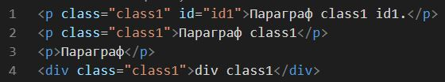
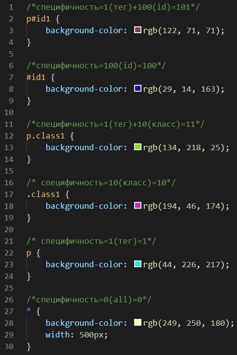

Специфичность (CSS Specificity)
Специфичность селектора определяет приоритет применяемого стиля.
Специфичность селектора id=100, class=10, тега=1, body=0.
Селектор с равной специфичностью стоящий снизу перебивает селектор с равной специфичностю стоящий сверху.
Отображение в браузере:
Параграф class1 id1.
Параграф class1
Параграф
div class1
Код:
HTML
CSS
В данном примере порядок применен порядок убывания специфичности с верху вниз для того,
чтобы продемонстрировать перебивание стилей.